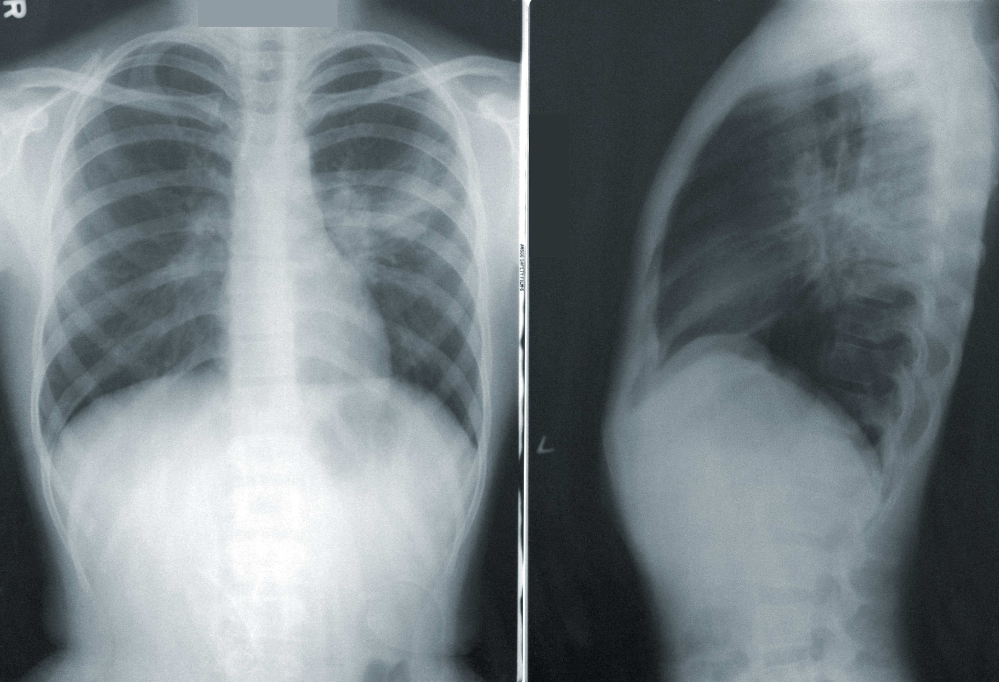
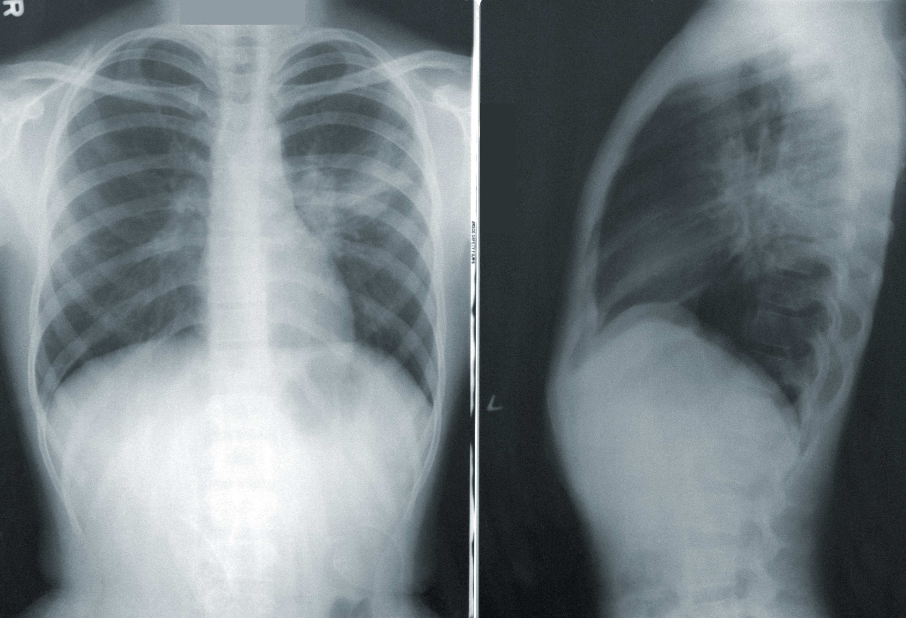

Greetings! I'm a data science enthusiast on a mission to unravel the mysteries of numbers and patterns. Currently, I'm diving deep into the world of data science at Liverpool Hope University for my Master's degree.Proficient in Python, R, and Tableau, I specialize in the comprehensive analysis and visualization of complex datasets. My expertise extends to implementing machine learning algorithms using scikit-learn and TensorFlow, conducting rigorous statistical analyses, and excelling in data cleaning and preprocessing.
I approach problem-solving with a meticulous and analytical mindset, ensuring effective solutions to intricate challenges. Beyond technical proficiency, my strong communication abilities enable me to articulate findings compellingly. Committed to contributing innovative insights to the dynamic field of data science, I invite you to explore the vast landscape of data with me, where each challenge presents an opportunity for discovery, and every dataset narrates a unique story. Let's navigate the data-driven world together with precision and purpose.
 

In this project, we propose a pneumonia detection model based on deep learning techniques, specifically Convolutional Neural Networks (CNNs). The model utilizes a pre-trained CNN architecture, ResNet-18, and is trained on a dataset of chest X-ray images. We employ various data preprocessing techniques, including data augmentation and class balancing, to enhance the model's performance.

A classification model was built on the dataset using scikit-library. The motive of the model is to build an income classifier system for individuals.
This report delves into static hand gesture recognition, a vital application of computer vision. Leveraging Convolutional Neural Networks (CNNs) through PyTorch, the implementation achieved high performance. The dataset underwent data augmentation, including re-scaling, zooming, and cropping. Training on 600 images and testing on 300 images across 6 classes resulted in a remarkable model accuracy of 96.71% in training and 97.07% in testing..

Conducted an in-depth analysis of Chennai's temperature time series data spanning 1990-2022, employing ARIMA and SARIMA models. Explored annual and monthly temperature trends, verified stationarity via ADF testing, and extracted meaningful insights. Developed effective models, ARIMA (1,1,1), and SARIMA (1,1,1)(1,1,1,12), demonstrating adeptness in forecasting while addressing both non-seasonal and seasonal factors. The analysis yields valuable temperature patterns and forecasts, showcasing my expertise in time series analysis.

The customer segmentation analysis involved applying K-means clustering to a dataset comprising 3,999 customers and eight attributes. Through the elbow method, an optimal cluster count of five was determined. Notable outcomes include Cluster 2's elevated award travel miles requirement, Cluster 4's leading elite miles eligibility, and Cluster 0's highest partner flight transaction miles. Visualizations emphasized these distinctions, offering valuable insights for tailored marketing and personalized engagement strategies

The goal here is to create a predictive model using Machine Learning algorithms to determine whether a client will subscribe (yes/no) to a term deposit.